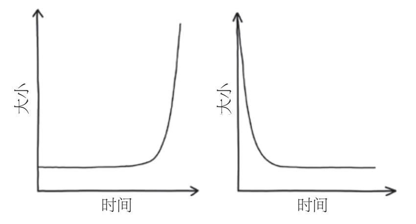
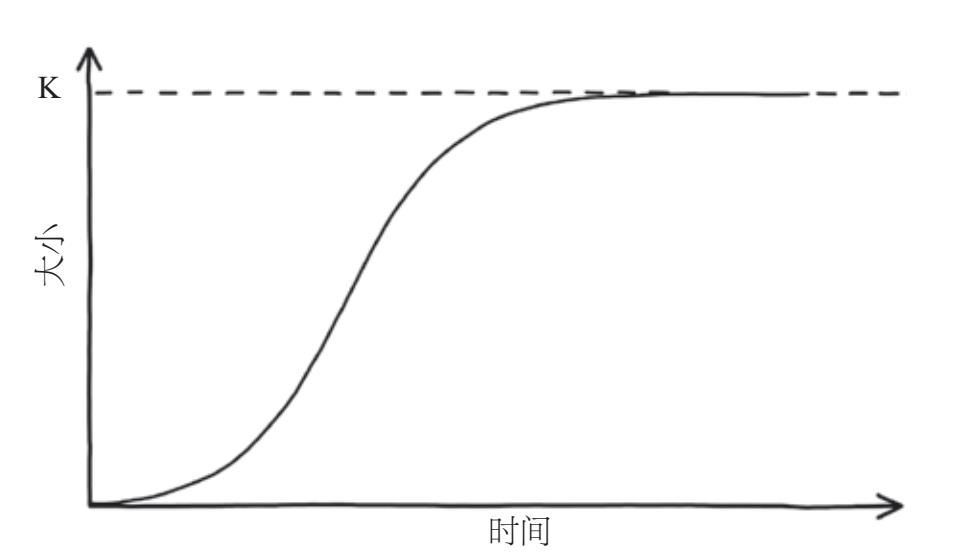

达伦·卡迪克是一名来自英国南威尔士小镇卡尔迪科特的驾驶教练。2009年，一位朋友向他提供了一份待遇优渥的兼职工作。如果他向一家当地投资集团投入3 000英镑，并且招募两个人也投入同样的金额，那么他将在几周后得到23 000英镑的回报。刚开始卡迪克觉得天上不可能掉馅饼，于是他拒绝了这一提议。但最终，朋友告诉他“在这个游戏里没有人会输，因为这个模式会一直持续下去”。就这样，卡迪克被说服了，但最终的结果是他一无所有。10年过去了，他依然在为这一错误买单。
卡迪克不知道的是，他位于这个金字塔计划的底层，因此无法把这一模式延续下去。始于2008年的“给与拿”模式找不到新的投资者了，故而在一年内崩溃，但在此之前，这一模式已经从英国的1万多名投资者那里榨取了2 100万英镑，这些投资者中有90%的人都未能拿回自己的3 000英镑的本金。依赖于投资者招募更多其他投资者以获取分红的投资计划注定会失败。每一层级的新投资者的数量会随着当前投资者总数的固定比例攀升，在差不多15轮招募之后，处在这个金字塔中的人将会超过1万。尽管1万听起来已经很多了，但在“给与拿”模式中，这一数量很容易就会被超过。再经过15轮招募之后，地球上每7个人中就得有一个人投资，才能保证这个模式继续下去。这种指数增长的现象会导致找不到新的投资者，从而使投资模式崩塌。
如果一个量按照它当前数量的固定比例增长，这类增长方式就叫作指数增长。想象一下，在某个清晨你打开了一瓶牛奶，一个单细胞粪链球菌在你盖上瓶盖之前掉进了瓶子里。粪链球菌是导致牛奶变味和凝结的罪魁祸首，但现在只有一个细胞，应该不会造成什么影响吧？[1]当你知道粪链球菌每小时能分裂出两个子细胞的时候，或许会不太淡定了。[2]新一代细胞的数量会以当前细胞数量的某个固定比例增长，因此粪链球菌菌落的数量增长是指数级的。

图1-1 J型指数增长曲线（左）和J型指数下降曲线（右）
描绘指数增长的曲线容易让人联想到轮滑运动员、滑板运动员和自由式小轮车运动员使用的1/4管坡道。刚开始坡度非常平缓，曲线很浅而且高度上升得很缓慢（正如你在图1–1中看到的第一条曲线那样）。两个小时后，牛奶瓶里会有4个粪链球菌细胞。4个小时后，将有16个，好像也不会造成什么大的影响。但就像1/4管坡道一样，指数曲线的高度和陡峭程度都是快速增长的。以指数形式增长的量刚开始都增长得十分缓慢，但它们随后会以不可思议的速度迅速增长。如果你把牛奶放在室温中48个小时，这段时间粪链球菌细胞的指数增长一直在持续，等到你再次打开瓶盖的时候，牛奶瓶里已经有近千兆个粪链球菌细胞了，这足以让你的血液凝结，更别说牛奶了。这个数量是我们这个星球上的人口数量的40 000倍。指数曲线通常也叫作J形曲线，因为它的形状很像J。当细菌耗尽了牛奶中的营养物质并且改变了它的PH值时，增长将难以为继，因此指数增长只能持续较短的时间。事实上，在几乎每个现实世界的场景中，长期的指数增长都是不可持续的，并且在很多情况下是病态的，因为增长主体要以无法承受的方式消耗资源。比如，人体内细胞的持续指数增长是癌症的典型特征。
另一个指数曲线的例子是自由落体滑水，之所以叫这个名字，是因为滑梯太陡峭，滑水者开始时的感觉就像在做自由落体运动。这种情况下，向下滑落的轨迹曲线不再呈指数增长趋势，而是呈指数下降趋势（图1–1的第二幅图就是指数下降的例子）。当某个量以与它目前的数量成比例的速度下降的时候，我们就称其为指数下降。打开一大包M&M巧克力豆，把它们全倒在桌子上，然后吃掉所有M面朝上的巧克力豆，把剩下的放回袋子里，留第二天吃。第二天把巧克力豆摇匀后再重复前一天的操作。每一次把巧克力豆倒出来后，你都会吃掉当前巧克力豆的大约一半，所以每次装回袋子里的量也就约为一半，这会导致巧克力豆的数量呈指数下降趋势。与此类似，呈指数下降的滑道刚开始几乎是垂直于地面的，因此滑水者的高度下降得非常快；在巧克力豆的情形中，如果我们当前拥有的巧克力豆越多，我们吃下去的自然就多。越往下走，滑道的坡度就越小，到最后几乎和地面平行；如果我们只剩下一点儿巧克力豆了，我们吃下去的自然就少了。尽管巧克力豆的M面朝上还是朝下是随机和无法预测的，但随着时间的推移，巧克力豆的剩余数量会呈现出和滑道曲线相似的指数下降特征。
在本章中，我们将揭示指数行为与日常现象之间的隐秘联系：疾病在人群中的传播，互联网的流行文化，胚胎的快速生长，银行存款的缓慢增长，我们感知时间流逝的方式，核武器的爆炸原理，等等。随着理解的深入，我们将仔细挖掘“给与拿”金字塔模式的内在崩溃逻辑。那些事件受害者的经验教训告诉我们指数思维是多么重要，这反过来又将帮助我们对现代世界的快速变化做出预判。
每当我把工资存入银行账户时，我总是这样自我安慰：无论我的存款有多少，它总会呈指数增长。实际上，银行可以让你账户中的财富无上限地呈指数增长，至少理论上如此。假如计算复利（你的利息也会累计计入本金并在下一期的时候获得利息），存款总数就会以当前的数量成比例地增长，也就是呈指数增长。正如本杰明·富兰克林所说：“钱能生钱。”如果你等的时间足够长，即便是极小的投资最终也会变成巨大的财富。但是，先别急着把你的应急基金存起来。如果你以1% 的年利率储蓄100英镑，900年后你才会成为一个百万富翁。尽管指数增长通常意味着快速增长，但如果初始投资和增长幅度都很小，指数增长一开始也是很缓慢的。
而且，由于信用卡会对未偿还债务收取固定利息（通常很高），因此你的信用卡负债也可能会呈指数增长。就像抵押贷款一样，你越早还清信用卡欠款或你前期偿还得越多，你最终支付的总金额就越少，因为这样一来将很难有快速增长的机会。
*
偿还抵押贷款和其他债务是“给与拿”模式的受害者最初加入其中的重要原因之一。挣快钱并减轻财务压力的诱惑太大，以至于很多人无法拒绝，尽管有人怀疑某个环节可能会出问题。正如卡迪克自己承认的那样：“‘如果事情看起来美好到不真实，它应该就是一场骗局’，这句老话说得的确没错。”
该计划的发起人——靠养老金度日的劳拉·福克斯和卡罗·查尔莫斯，从在天主教修道院学校时起就是朋友。两人是当地社区的支柱，一个是扶轮社的副主席，另一个是受人尊敬的祖母，在设立这项欺诈性投资计划时，她们就明确地知道这是一场诈骗。“给与拿”通过巧妙的设计吸引潜在的投资者，并且掩盖了其中的陷阱。在传统的两层金字塔模式里，上游直接从他们招募到的投资者那里拿钱，但这个计划的不同之处在于，它更像一个四级机组模式。上游的人可以被看作机长，机长负责招募两个副驾驶员，这两个副驾驶员又分别负责招募两个机组成员，每个机组成员再招募两名乘客。在福克斯和查尔莫斯的计划里，这15个人的层级一旦形成，8名乘客将每人支付3 000英镑给组织者，组织者再拿出23 000英镑给最初的投资者。这些钱的一部分被捐赠给慈善机构，来自英国防止虐待儿童协会等机构的感谢信增加了该计划的合法性；还有一部分由组织者保管，以保证该计划的顺利运行。
收到下级的付款后，机长可以退出机组模式，两个副驾驶员晋升为机长，他们需要再招募8名乘客。对投资者来说，机组模式的诱惑巨大，因为新参与者只需要招募另外两个人，他们就可以得到8倍的收益。在一些层级数更少的模式中，为了得到相同的回报，每个人需要招募的人数更多。这种四级结构意味着机组人员不会从他们招募的人那里直接拿到钱。因为新招募的人很可能是机组成员的亲朋好友，所以熟人之间将不存在金钱交易。乘客与机长之间的严格区分使招募变得更容易，也使机长遭到报复的可能性更小，从而使这个投资机会更具吸引力，并且促使数千名投资者加入其中。
同样，这种金字塔模式中的许多投资者都被之前获得丰厚回报的案例煽动，在某些情况下，甚至直接见证了这些回报。该计划的组织者福克斯和查尔莫斯还在查尔莫斯名下的萨默塞特酒店举办了豪华的私人聚会，聚会发放了印有成员照片的传单，他们趴在铺满现金的床上或者对着镜头挥舞着拳头。组织者还为每个聚会邀请到一些“新娘”，也就是那些已经成为机长并且即将获得回报的人（主要是女性）。在200~300名潜在投资者面前，“新娘”们会被问到4个简单的问题，难度类似于“当匹诺曹说谎的时候，哪里会变长”。
该计划的这一测试环节旨在利用法律漏洞，福克斯和查尔莫斯认为，如果涉及技能因素，此类投资就应该被允许。在这个事件的采访视频中，福克斯想表达的意思很清晰：“我在自己家赌博，与你何干？”然而她错了，该案件的原告律师迈尔斯·班纳特解释说：“测试非常简单，只要参加了，人人都能答对并得到回报。他们甚至还能向朋友或成员求助，并且成员们都知道答案！”
但是，这并没有阻止福克斯和查尔莫斯在毫无技术含量的病毒式营销活动中使用颁奖聚会的方式作为强心剂。看到“新娘”们拿到了属于她们的23 000英镑支票，许多受邀嘉宾会进行投资并鼓励他们的朋友和家人也加入进来，成为金字塔层级中的一员。如果每个新投资者都能拉来两个或更多其他投资者，这种模式就能永远持续下去。在福克斯和查尔莫斯于2008年启动这个模式的时候，她们是仅有的两个机长。通过招募朋友投资，她们组建起整个网络，并且这对搭档很快发展出4位学员，这4个人又发展出8位学员，然后是16位，以此类推。这种翻倍增长的方式和发育的胚胎中细胞数量的增长方式十分相似。
当我的妻子怀上第一个孩子时，我们就像许多准父母一样，对她子宫里发生的任何事都感到好奇。我们借了一个超声波心脏监测器来聆听宝宝的心跳；我们报名参加临床试验，让宝宝接受额外的检查；我们浏览了一个又一个网站，了解宝宝在成长过程中发生了什么以及为什么妻子会恶心。我们最喜欢的一类网站是“测测你的宝宝有多大”，它们比较了在怀孕的每一周里，肚子里的宝宝与生活中常见的水果、蔬菜或其他适当尺寸食物的大小关系。它们用诙谐的语句来描述这些尚未出生的宝贝，比如“你的小天使体重约1.5盎司[3]，身长约3.5英寸[4]，差不多有柠檬大小啦”，或者“你的宝贝小萝卜现在体重约5盎司，身长约5英寸”。
在这些五花八门的比较里，最让我印象深刻的是婴儿尺寸的每周变化速度。在第四周，你的宝宝大约和罂粟籽差不多大，但到了第五周，它就像气球一般膨胀到芝麻的大小了！这意味着在一周内婴儿的尺寸增加为原来的16倍左右。
但也许这种尺寸上的迅速增长不应该如此令人惊讶。卵细胞受精后形成的受精卵会经历一系列的细胞分裂，称作“卵裂”，这使得发育胚胎中的细胞数量迅速增加。它先一分为二。8小时后，这两个细胞进一步分裂为4个，再过8个小时，4个变为8个，很快又变为16个，依此类推，就像金字塔模式里各层级的新增投资者数量一样。后续的分裂大约每8小时发生一次。因此，每次分裂产生的细胞数量与当前胚胎中的细胞总量成正比；当前的细胞越多，在随后的分裂中产生的细胞也越多。在这种情况下，由于每个细胞在每次分裂时恰好产生一个子细胞，因此胚胎中细胞数量的增长因子是2；换句话说，胚胎的大小在每次细胞分裂后都增加了一倍。
幸运的是，人类在妊娠期内，胚胎规模呈指数增长的这段时间较短。如果胚胎在整个妊娠期内以相同的指数速率持续生长，那么在840次细胞同步分裂后将会产生一个拥有大约10253个细胞的超级婴儿。这个数字有多大呢？假设宇宙中的每个原子都包含一个宇宙，那么所有这些宇宙中的原子总数将大致相当于超级婴儿的细胞数量。当然，随着胚胎中一些已设定好的复杂反应的发生，细胞分裂不会一直这样快。实际上，新生婴儿身体中的细胞数量近似等于2万亿个，在胚胎经历40次同步分裂后就可达到该数量。
对于创造新生命来说，细胞数量的指数增长至关重要。然而，指数增长这种可怕的力量也让核物理学家罗伯特·奥本海默说出了这样的话：“现在我就是死神，世界的毁灭者。”这种增长不是细胞的增长，也不是个体生命的增长，而是由原子核裂变产生的能量的指数增长。
在第二次世界大战期间，奥本海默是美国洛斯阿拉莫斯国家实验室的负责人，该实验室也是以制造原子弹为目的的曼哈顿计划的基地。1938年，德国化学家发现可将重原子核（紧密结合的质子和中子）分裂成较小的组成部分，这类似于细胞的二分裂，被称为“核裂变”。裂变要么在自然界中由不稳定的化学同位素的放射性衰变自发产生，要么通过在所谓的“核反应”中用亚原子粒子轰击原子核来人工诱导产生。不管是哪种情况，将原子核分裂成两个较小的核的过程，都会以电磁辐射的形式释放出大量能量，裂变产物也将携带巨大的动能。核物理学家很快就注意到，这些由第一次核反应产生的裂变产物可用于分裂更多的原子核，并释放出更多的能量，即所谓的“核链式反应”。如果每次核裂变平均产生一种以上可继续分裂的产物，那么理论上，每次裂变都可能触发多次分裂事件。随着这一过程的持续，分裂事件的数量将呈指数增长，并产生巨大的能量。如果可以找到能进行这种不受控制的核链式反应的物质，那么这种在短时间内释放能量的指数增长模式将使它成为一种强有力的武器。
1939年4月，在欧洲爆发战争的前夕，法国物理学家弗雷德里克·约里奥–居里（玛丽和皮埃尔的女婿，与他的妻子也共同获得过诺贝尔奖）做出了重大发现。他在《自然》杂志上发表文章称，在由单个中子引起的裂变中，铀同位素U235平均发射3.5个（后来修正为2.5个）高能中子，[5]这正是驱动指数增长的核反应链所需的材料。于是，各国制造原子弹的比赛正式开始了。
与此同时，诺贝尔奖获得者海森堡和其他几位知名的德国物理学家也在为纳粹开展原子弹研究工作。所以，奥本海默心里清楚他在洛斯阿拉莫斯的工作之艰巨，他面临的主要挑战是创造能促进指数增长的核链式反应的条件，使引爆原子弹所需的大量能量可以瞬间释放。为了产生这种能自我维持和足够快速的链式反应，他需要确保在U235原子裂变的过程中发射的中子能够充分地被其他U235原子的原子核重新吸收，并使它们依次分裂。他发现，在天然存在的铀中，由U235发射的中子中有很大一部分被U238原子（另一种同位素，占天然铀的99.3%）吸收，[6]这意味着任何链式反应都会以指数方式消失，而不是增长。为了产生指数增长的链式反应，奥本海默需要尽量去除矿石中的U238，以提炼出极纯的U235。
综合考量这些因素，就有了裂变材料临界质量的概念。铀的临界质量指能产生自我持续核链式反应所需的质量，这取决于多种因素，其中最关键的或许就是U235的纯度。即使使用20%纯度的U235（自然界中的纯度只有0.7%），临界质量也会超过400千克，这使得高纯度对于制作炸弹至关重要。即使已经提炼出足够纯净的铀并达到了超临界的状态，奥本海默仍然面临着输送炸弹的挑战。显然，他不能在炸弹中直接装好临界质量的铀，并指望它不会爆炸，因为一次自发的裂变足以引发链式反应，并引起指数爆炸。
纳粹一方一直没有停止研发原子弹的脚步，于是奥本海默和他的团队匆忙提出了一个投放原子弹的想法。他们使用“枪型”方法用常规炸药将一块亚临界质量的铀发射到另一块亚临界质量的铀中，以产生一块超临界质量的炸弹。然后，自发的裂变会触发链式反应并释放中子，使链式反应继续下去。两块亚临界质量的铀的分离确保了炸弹不会提前引爆，高浓度的铀（约80%）意味着临界质量大约为20~25千克。但奥本海默无法承受失败的风险，因此他坚持要求把纯度提至更高。
然而，当他们最终准备了足够多的纯铀时，欧洲战场的战事已经结束，但太平洋地区的战争依然激烈。尽管日本已然失去军事优势，却没有投降的迹象。曼哈顿计划的负责人莱斯利·格罗夫斯将军认识到，日本的入侵将大大增加美国本土的伤亡，于是他下达命令，在天气条件允许的情况下，即刻向日本投放原子弹。
1945年8月6日，经过了几天台风过境引起的恶劣天气后，太阳在广岛上空升起。早上7时9分，一架美国飞机在经过广岛上空的时候被发现，于是整座城市响起了空袭警报。17岁的高仓明子刚成为一名银行职员，她正在早上上班的途中，于是她跟随人流进入遍布城市各处的公共防空洞避难。
空袭警报在广岛并不鲜见，这座城市是一座战略军事基地，也是日本第二总军的总部所在地。不过，那时的广岛并不像日本其他城市那样，遭到了狂轰滥炸。明子和其他上班族不知道的是，广岛被刻意保留了下来，美国人的目的就是想全面评估他们的新武器的破坏力。
7点半，警报解除。从头顶飞过的B–29轰炸机像一架预测天气的飞机一样无害。当明子和其他人一起从防空洞里出来时，她松了一口气：看来今天早上是没有空袭了。
明子和广岛上的其他居民在不知情的情况下继续去上班，此时B–29轰炸机在广岛上空向艾诺拉·盖伊号轰炸机发送出天空晴朗的无线电报，艾诺拉·盖伊号载有被称为“小男孩”的枪型裂变弹。当孩子们上学，工人们前往办公室和工厂的时候，明子也到达了位于广岛中心的银行开始工作。女性职员必须比男性职员提早30分钟到达，帮助清理办公室，再开启一天的工作。所以在8点10分的时候，明子已经进入空旷的大楼开始工作了。
8时14分，驾驶着艾诺拉·盖伊号的保罗·蒂贝茨上校瞄准了T形相生桥。此时这个4 400千克的“小男孩”被释放，距离地面只有6英里[7]。在“小男孩”进行自由落体运动大约45秒后，它在距地面一英里左右的高度被引爆。一块亚临界质量的铀被射入另一块亚临界质量的铀，两块铀合体达到了超临界质量。几乎在那一瞬间，原子的自发裂变释放出中子，其中至少有一个被U235原子吸收。这个原子又裂变并释放出更多的中子，这些中子又被更多的原子吸收。这个过程急剧加速，导致连锁反应呈指数增长，并释放出巨大的能量。
明子擦干净男同事的桌面，往窗外瞥了一眼，只看到一道明亮的白色闪光，就像一根燃烧的镁条。她不知道，指数增长使得炸弹瞬间释放出相当于3 000万根炸药棒的能量，炸弹的温度可达到几百万摄氏度，比太阳表面还热。1/10秒后，电离辐射到达地面，对暴露在外的所有生物造成毁灭性的放射性损害。接下来，一个直径300米的火球在城市上空膨胀，它的温度达到几千摄氏度。据目击者描述，当时的情形就像太阳在广岛上空又升起了一次。以声速行进的冲击波将整个城市的建筑物夷为平地，明子直接被抛到房间对面的墙上，昏迷不醒。红外辐射烧灼着数英里内暴露在外的生物，靠近爆炸源的人立即被化成一股烟，或被烧成灰烬。
明子所在的银行大楼得益于防震设计，损失不是最惨重的。恢复意识后，她摇摇晃晃地来到街上，发现清澈湛蓝的天空消失了。广岛上空的第二个太阳开始下落，和它升起时几乎一样快。街道昏暗，灰尘和烟雾笼罩，目光所及之处，大楼倾塌，哀鸿遍野。明子是距离爆炸源最近的幸存者之一，当时她离爆炸源外围只有260米。
据初步估计，炸弹本身及其引发的肆虐整座城市的火灾造成约7万人丧生，其中5万人是居民，广岛的大部分建筑也被彻底摧毁。奥本海默先知般的预言成真了。从第二次世界大战结束至今，关于美国在广岛和9天后在长崎投放原子弹的合法性仍然存在争议。
无论原子弹的存在正确与否，作为曼哈顿计划的一部分发展起来的核裂变技术已经成为为我们提供清洁、安全、低碳能源的途径之一。一千克铀比燃烧相同质量的煤能多释放大约300万倍的能量。[8]尽管有证据显示核能更安全可靠，但核能在大众心目中却因为安全和环境问题而声名狼藉。从某种程度上说，指数增长是罪魁祸首。
1986年4月25日晚，发电厂轮班主管亚历山大·阿基莫夫例行做夜班检查。旨在对冷却泵系统进行压力测试的实验将在几个小时后开始。当他开始这项实验时，他认为自己是幸运的，在苏联日趋垮塌和20%的人民生活在贫困之中的大环境下，他仍在切尔诺贝利核电站找到了一份稳定的工作。
晚上11点左右，基于测试的目的，阿基莫夫需要将功率输出降低到正常运行容量的20%左右，他在反应堆堆芯中的铀燃料棒之间远程插入了许多控制棒。控制棒用于吸收原子裂变释放的中子，这样就不会导致太多其他原子分裂。这使得连锁反应的快速增长趋势被打破，而不像核弹中的连锁反应那样不受控制。然而，阿基莫夫意外地插入了太多控制棒，致使动力装置的输出显著下降。他知道这会导致反应堆中毒，因为控制棒会进一步减慢反应堆的速率，降低温度，导致反应堆在自我强化的反馈中进一步冷却。惊慌失措的阿基莫夫直接跳过安全系统，将超过90% 的控制棒置于人工监督之下，并将它们从堆芯中取出，以防止反应堆关闭。
随着动力输出的缓慢增加，指示器上的指针也开始回升，直至此时阿基莫夫才松了口气。在成功避免了危机之后，他开始了测试的下一阶段，关闭动力泵。但阿基莫夫不知道的是，备用系统输送冷却水的速度并没有跟上来。虽然初始阶段检测不到，但缓慢流动的冷却水会蒸发，从而削弱其吸收中子和减少核心热量的能力。多余的热量和功率输出导致更多的水迅速变成蒸汽，产生更多的能量，形成更为致命的正反馈回路。没被设置为人工监督的其余几根控制棒被自动插入反应堆，以控制热量产生，但这远远不够。当意识到功率输出增加得太快时，阿基莫夫按下紧急关闭按钮，这时所有控制棒被插入反应堆，核心电源关闭，但为时已晚。当控制棒被插入反应堆时，它们引起短暂但显著的功率输出高峰，导致核心过热，一些燃料棒破裂并阻止控制棒的进一步插入。随着热量呈指数增长，功率输出增加到平常运行水平的10倍以上。冷却水迅速变成蒸汽，引发两次巨大的压力爆炸，反应堆核心被破坏，核裂变放射物随之扩散开来。
阿基莫夫不相信堆芯会爆炸，相反，他传递了有关堆芯状态的错误信息，这导致至关重要的围堵补救措施被延误。在最终意识到破坏的严重程度后，他没穿防护服就与他的组员一起将水泵入破碎的反应堆中。在这个过程中，他们每小时承受200灰的放射物质。而通常的致命剂量约为10灰，这意味着未做防护的他们在不到5分钟内就受到了致命剂量的辐射。急性辐射发生两周后，阿基莫夫不幸死亡。
在苏联的官方数据中，切尔诺贝利事故造成的死亡人数仅为31人，包括参与大规模清理的人员在内。但事实上这一数据要高得多，更不用说因放射性物质扩散造成的发电厂附近的人员伤亡了。破碎的反应堆堆芯燃烧了整整9天，火灾使大气中的放射性物质比广岛原子弹爆炸期间释放的放射性物质多出数百倍，对几乎整个欧洲的环境产生了广泛的破坏。[9]
1986年5月2日是一个周末，不合时宜的强降雨袭击了英国高地。雨滴携带着切尔诺贝利事故释放的放射性物质——锶90、铯137和碘131下落。总的来说，切尔诺贝利反应堆释放的辐射物中约有1%落在英国。这些放射性同位素先被土壤吸收，再被生长的植物吸收，然后被绵羊吸收，最后被人们食用。
英国农业部立即对受影响地区绵羊的销售和流动予以限制，涉及近9 000个农场和400多万只绵羊。湖区羊农戴维·埃尔伍德很难相信发生了什么。携带着无形且几乎无法探测到的放射性同位素的云层，给他的生计蒙上了一层阴影。他每次卖羊之前，都必须先把羊隔离起来，再请一位政府检查人员来检测它们的辐射水平。检查人员每次来的时候都会告诉他，限制措施只会持续一年。然而，埃尔伍德在这片阴云下生活了超过25年，直到2012年这些限制才被取消。
然而，政府本应该更有预见性地通知埃尔伍德和其他农民，何时辐射水平可达到足够安全的程度，以便他们能自由售卖绵羊。由于指数式衰减现象的存在，对辐射水平是可以进行较为准确的预测的。
与指数增长类似，指数衰减指以与当前数量成比例的速率减少，如前文讲到的M＆M巧克力豆每天的数量变化和呈指数下降趋势的曲线。指数衰减描述的现象在生活里也屡见不鲜，比如药物在人体内的吸收过程，[10]啤酒倒进杯中后泡沫的迅速减少。[11]指数下降趋势可以很好地描述放射性物质的辐射水平随时间的下降速率。[12]
在放射性衰变的过程中，不稳定放射性物质的原子将以辐射的形式自发地发射能量，即便没有外界的触发也是一样。在单个原子的水平上，衰变过程是随机的。量子理论从原理上否定了精确预测给定原子何时会发生衰变的可能性。然而，在包含大量原子的宏观水平上，放射性的下降是一种可预测的指数衰减，原子数量的每一次减少与剩余数量成比例。每个原子都独立于其他原子产生衰变。材料的半衰期可用于描述衰变速率，也就是其中一半不稳定的原子发生衰变所需的时间。因为衰变是遵循指数规律的，所以无论开始时放射性材料有多少，其放射性减少一半的时间总是相同的。想象之前的例子，每天倒出M＆M巧克力豆并且吃掉M面朝上的部分，巧克力豆的半衰期就是一天，因为我们每次将巧克力豆倒出时，都会有大约一半是M面朝上的。
放射性原子的指数衰减现象是放射性鉴年法的基础，该方法通过测定材料的放射性水平推断出材料的大致年代。通过比较放射性原子的丰度与其衰变产物的丰度，理论上我们可以确定任何能产生原子辐射的物质的年代。放射性鉴年法的用途广泛，包括近似测定地球的年龄和文物的年代，比如死海古卷。[13]如果你好奇人类究竟是怎么知道始祖鸟是1.5亿年前的物种[14]或者奥兹冰人是在5 300年前死亡的[15]，这其中很可能就涉及放射性鉴年法。
近年来，更准确的测量技术促进了放射性鉴年法在法医考古学中的应用，人们利用放射性同位素的指数衰减（以及其他考古技术）来破案。2017年11月，放射性碳鉴年法被用来揭露一场世界上最昂贵的威士忌酒骗局。一瓶标榜有130年历史的麦卡伦单一麦芽威士忌酒被证明只是出品于20世纪70年代的廉价冒牌货，这让给其标价1杯10 000美元的瑞士酒店十分懊恼。在2018年12月进行的一项后续调查中，同一个实验室发现他们检测的超过1/3的典藏苏格兰威士忌酒都是假货。但对于放射性鉴年法的应用，最引人注意的也许是对年代久远的艺术作品的创作时间的鉴定。
*
在第二次世界大战之前，众所周知，荷兰绘画大师约翰内斯·维米尔只有35幅画作传世。1937年，法国发现了维米尔的一幅引人注目的新作品，即被艺术评论家誉为维米尔最伟大的作品之一的《在伊默斯的晚餐》，它很快就被鹿特丹的博伊曼斯·范伯宁根博物馆花大价钱买下。在接下来的几年中，还有几件不为人所知的维米尔作品面世。这些作品也很快被富有的荷兰人收藏，除了有钱之外，还有一部分原因是防止重要的文化财产被纳粹摧毁。尽管如此，维米尔的作品之一——《基督与罪女》最终还是被赫尔曼·戈林获得，他是希特勒指定的继任者。
战争结束后，维米尔的作品和大部分被纳粹抢走的艺术品在一个奥地利盐矿被发现，人们费尽千辛万苦才找到负责出售这些画作的人。维米尔的这些画作最终被认定为汉·范米格伦伪造而成，他是一位失败的艺术家，许多艺术评论家都认为他的作品只是对大师的模仿。不出所料，范米格伦被捕后，立即受到了荷兰公众的唾弃。他不仅被怀疑向纳粹出售荷兰文化财产（罪可致死），还由此赚取了巨额资金。整个战争期间，当许多市民忍饥挨饿时，他却在阿姆斯特丹过着奢侈的生活。在一次孤注一掷的自我辩护中，范米格伦声称他卖给戈林的画并不是维米尔的作品，而是他伪造的作品。他还承认新发现的维米尔的其他作品及弗兰斯·哈尔斯和彼得·德霍赫的作品，都是他的仿作。
为调查这些伪造品而设立的一个特别委员会似乎证实了范米格伦的说法，这部分基于委员会让他画的一部原创画作——《基督和医生》。然而，当范米格伦于1947年开始接受审判时，他却被赞为国家英雄，因为他骗过了那些嘲笑他的精英艺术评论家，并愚弄纳粹高级指挥官买下了毫无价值的仿作。他最终被证实与纳粹没有勾结，只因伪造和欺诈罪而被判入狱一年，但还没等到该判决执行，他就死于心脏病。尽管有了判决书，但许多人（特别是那些购买了范米格伦·维米尔画作的人）仍然坚称这些画作不是伪造的，并对调查结果提出了质疑。
1967年，人们使用铅210放射性鉴年法对《在伊默斯的晚餐》重新进行了检测。尽管范米格伦在仿造画作的时候非常注重细节，使用的很多材料都和维米尔的一致，但他无法控制这些材料的制作工艺。为了让作品显得更真实，他使用了产于17世纪的画布，并根据原始配方配制颜料，但他使用的铅是近期才从相应的矿石中提取的。天然存在的铅中含有放射性同位素铅210及其母体放射性物质（铅从母体物质中衰变而来）——镭226，当从矿石中提取铅时，大部分镭226被去除，仅有少量残余，这意味着在提取物中铅210的含量也很少。通过比较样品中的铅210和镭226的浓度，并基于铅210的放射性和半衰期，就可以精确地测定铅涂料的年份。鉴定人员在《在伊默斯的晚餐》中发现的铅210的比例要高得多，如果这幅画作诞生于300年前，那么它的颜料中铅210的含量不会这么高。这证实了这幅作品不可能是由17世纪的维米尔绘制的，因为范米格伦用来绘制这幅伪作的颜料中含有的铅在17世纪还没有开采出来呢。[16]
如果范米格伦生活在现代，那么他的作品很可能会被打包放在一篇方便点击的文章里，这篇文章或许可以叫“九幅堪比原作的仿作”，并在互联网上飞速传播。现代世界充斥着虚假的信息，在千万富翁总统候选人米特·罗姆尼的一张假照片上，一位支持者举着的牌子上本应写着“ROMNEY”，却被改成了“RMONEY”；在一张加工过的照片上，一名游客正在美国世贸中心南塔的观景台上摆着姿势，似乎并没有意识到背景中那架低空飞行的飞机正在接近。这些获得了全球曝光的例子堪称病毒式营销的典范。
病毒式营销指广告效果就像病毒的自我复制过程一样散布开来（我们将在第7章更深入地研究它背后的数学原理）。网络中的单个个体会感染其他个体，这些受到感染的个体又会感染新的个体。只要每个新被感染的个体至少再感染一个个体，病毒式信息就会呈指数增长。病毒式营销属于模因研究的一个子领域，模因指一种风格、行为，在更多的情况下它指一种想法。模因通过社交网络在人与人之间传播，就像病毒一样。理查德·道金斯于1976年在《自私的基因》一书中创造了“模因”的概念，用于解释文化信息的传播方式。他将模因定义为文化传播的基本单位，就像基因是遗传的基本单位一样，他提出模因可以自我复制和变异。道金斯给出的关于模因的例子包括：曲调，短语，以及制作花盆或建造拱门的方式（代表了他写书的那个年代的特征）。当然在1976年，道金斯并不像我们现在这样广泛接触互联网，正是互联网使得曾经无法想象（甚至可以说毫无意义）的模因传播成为现实。比如“神奇的裙子”“瑞克摇摆”“大笑猫”等网络事件。
ALS（肌萎缩侧索硬化）冰桶挑战也许是最成功且真正有组织的病毒式营销案例之一。2014年夏天风靡整个北半球的冰桶挑战的内容是：往头上浇一桶冰水，同时用视频记录下来，接着将视频发布在社交网络上并点名其他人接受冰桶挑战，你还能通过此举给慈善机构捐款。
我参与的是传统形式的冰桶挑战——彻底浸泡在冰水中，我在视频中点名另外两个人参与挑战。与核反应堆中的中子一样，只要接下来有一个人接受这项挑战，模因就会自我维持，使连锁反应呈指数增长。
这个挑战还有其他形式，被点名的人可以选择接受挑战并向ALS协会或他们自己选择的慈善机构做出少量捐赠，也可以拒绝挑战但做出更多捐赠。除了增加被点名者参与模因的压力之外，与慈善机构关联起来还有一个好处，即通过建立利他主义形象，让人们对自己的评价更正面，这种自我满足的需求在一定程度上增加了模因的传染性。2014年9月初，ALS协会报告称从300多万捐助者那里获得了超过1亿美元的额外捐助资金。得益于冰桶挑战带来的资金支持，研究人员发现了第三个与ALS相关的基因，这从侧面表明了病毒式营销的深远影响。[17]
与流感等极端传染性病毒一样，冰桶挑战也与季节性（这是一种重要的现象，疾病在一年中的传播速度并不相同，我们将在第7章再次讨论这个话题）高度相关。随着秋天来临，冷空气席卷整个北半球，将身体浸泡在冰水中变得不太有趣，即使它背后的动机是高尚的。9月到来时，这种狂热已基本消失。就像季节性流感一样，它在随后两年的夏季以类似的形式回归，但引起的反响则小得多。2015年的挑战人数不足2014年的百分之一。2014年经历了此事的人建立了强大的“免疫力”，轻微变异的“菌株”（例如桶中放不同的物质）无法再感染这些个体。由于冰桶挑战无法持续激起人们的兴趣，新的参与者很快就消失了，达不到将“病毒”传播给至少一个人的标准。
在法国有一个关于指数增长的比喻常被用来警示孩子，让他们了解拖延的危险性。某一天，湖泊附近的居民注意到湖泊表面形成了一个小的藻类群落。在接下来的几天里，人们发现这个群落每天的面积都会翻倍。如果什么也不做，就只能眼睁睁地看着它覆盖整个湖面。如果人们不干涉，藻类只需60天就会覆盖整个湖面。由于一开始藻类的覆盖范围很小，没有造成直接威胁，所以人们决定让藻类自由生长，直到它覆盖整个湖面的一半再进行彻底清理。我们要回答的问题是：藻类将在哪一天覆盖湖面的一半？
对于这个问题，很多人不假思索地给出了答案——30天。但真实的情况是，由于藻类群落每天覆盖的面积会翻倍，所以如果湖面在某一天有一半被覆盖了，那么第二天它将被完全覆盖。因此，答案或许有点儿令人吃惊，藻类将在第59天覆盖湖面的一半，我们只剩下一天的时间来拯救湖泊了。在第30天的时候，藻类占据的面积还不到湖泊面积的十亿分之一。换个角度思考，如果你是藻类群落，你什么时候才会意识到你的生长空间快不够了？在没有理解指数增长的情况下，如果有人在第55天（那时候藻类仅覆盖湖泊表面的3%）告诉你，湖面将在5天后完全被覆盖，你会相信吗？可能不会。
这有助于我们理解人类的惯性思维。通常情况下，对我们的祖先来说，一代人的经历与下一代非常相似：做同样的工作，使用相同的工具，住在同一个地方。于是，他们希望后代也这样做。然而，技术进步和社会变革发生得如此之快，以至于在下一代身上出现了明显的差异。一些学者认为，技术进步的速度呈指数增长。
计算机科学家弗诺·文奇在一系列科幻小说和文章中阐述了这类想法，[18]在这些文学作品中，技术的进步越发频繁，并达到了超越人类理解能力的程度。人工智能的爆炸最终导致了“技术奇点”和无所不能的超级智能的出现。美国未来学家雷·库兹韦尔试图将文奇的观点从科幻小说的范畴引申到现实世界。1999年，他在《灵魂机器的时代》一书中，提出了一条“加速回报的法则”。[19]他认为，各种系统的演变，包括我们自身的生物进化，都在以指数级的速度发生。他甚至还指出了文奇的“技术奇点”的具体出现时间：大概在2045年，[20]我们将体会到“技术变革的无比迅速和影响深远，它代表了人类历史结构的崩塌”。库兹韦尔认为在奇点的影响下，可能会出现诸如生物和非生物智能的融合，基于软件的不朽人类，以及以光速进行宇宙航行的超高水平智能等。虽然这些极端、古怪的预测可能仅限于科幻领域，但确实有一些例子表明技术从长期看可以维持指数增长。
摩尔定律——计算机电路上的元件数量每两年增加一倍——是一个可以说明技术呈指数增长的例子。与牛顿运动定律不同，摩尔定律不是物理学定律或自然法则，所以我们没有理由认为它会一直成立。然而，1970—2016年，这个规律一直没有被打破。摩尔定律涉及数字技术的加速，这类技术为20世纪末的经济增长做出了重大贡献。
1990年，当科学家承诺将绘制人类基因组的所有基因（共计30亿个）时，批评者对该项目的规模表示质疑，并认为以目前的速度这个项目需要数千年的时间才能完成。但是，测序技术以指数速度快速发展。完整的“生命之书”于2003年提前完成，预算也控制在10亿美元之内。[21]今天，对一个个体的全部遗传密码进行测序只需不到一个小时的时间，费用低于1 000美元。
湖中藻类的故事提醒我们，缺乏指数思维方式可能是造成生态系统崩溃和人口爆炸的原因。尽管濒危物种的名单已经很长了，但我们都未意识到自己也在上面。
1346—1353年，席卷欧洲的黑死病是人类历史上最具破坏性的流行病之一（我们将在第7章详细研究传染病蔓延这个主题），造成了大约60%的人口死亡。至此，世界总人口减少到约3.7亿人。此后，全球人口不断增加。1800年，世界人口规模第一次达到10亿人。人口的快速增长促使英国数学家托马斯·马尔萨斯提出一种假设，人口的增长速度与其当前的规模成正比。[22]与早期胚胎中的细胞或银行账户中的资金一样，这个简单的规则表明人口在已经略嫌拥挤的星球上呈指数增长的态势。
通过太空探索解决地球上不断增长的人口问题是最受科幻小说和科幻电影（比如《星际穿越》）欢迎的题材。通常情况下，这类作品需要虚构一颗合适的类地行星，以便为更多的人类提供住处。2017年，著名科学家史蒂芬·霍金对星际移民给出了可信的解释，这绝不是一个虚构的解决方案。他发出警告，如果人类想在人口过剩的地球上和相关气候变化带来的灭绝威胁下生存下来，就应该在未来30年内离开地球，移民到火星或月球上。但令人失望的是，如果人口的增长速度仍然不受控制，即使将地球上一半的人运送到一个类地行星上，也只够我们挥霍63年，直到人口再次翻倍并且达到两个行星的饱和点。马尔萨斯预测，指数增长会使星际移民变得徒劳无功。他在文章中写道：“地球这片土地上的微生物如果得到充足的食物和空间来繁衍生息，只需几千年的时间，它们将遍布上百万个我们这样的世界。”
然而，我们已经发现（回忆一下本章开头提到的在牛奶瓶中繁殖的粪链球菌）指数增长不可能一直持续下去。随着人口的增加，环境中的资源分布通常会变得稀疏，这反过来会导致净增长率（出生率和死亡率之间的差异）下降。环境具有对某个物种的“承载能力”，它指环境所能容纳的可持续种群的最大数量。达尔文认识到，由于个体在自然环境中会为自己争夺位置，所以环境的承载能力会导致生存竞争。能反映物种内或物种之间的有限资源竞争所产生影响的最简单的数学模型就是逻辑斯谛模型。
由图1–2可见，在逻辑斯谛增长曲线的初始阶段，人口不受环境资源的限制，以当前规模的某个比例自由增长，因此曲线呈指数增长趋势。然而，随着人口的增加，资源稀缺使死亡率更接近出生率，人口净增长率最终降至零，此时新生儿的人数刚好等于死亡人数，这意味着人口数量达到稳定水平。苏格兰科学家安德森·麦肯德里克（最早的数学生物学家之一，在第7章我们将跟随他的研究更好地理解传染病的传播模型）是第一个证实细菌种群中存在逻辑斯谛模型的人。[23]此后，在确定了绵羊[24]、海豹[25]和鹤类[26]等多种动物种群的增长模式后，逻辑斯谛模型被证明是描述环境中新引入物种的种群数量变化的绝佳模型。

图1-2 逻辑斯谛增长曲线一开始呈指数增长趋势，但随着资源变成限制因素，增长受到抑制，人口数量趋近环境容量K
对于不同种类的动物来说，环境的承载能力大致保持不变，因为它取决于环境中的可用资源。然而，对人类而言，工业革命、农业机械化和绿色革命等多种因素使得我们可以不断提高环境对人类的承载能力。虽然目前学界对地球可承载的最大人口数量的估计有所不同，但许多数据显示，它的上限可能是90亿~100亿。著名社会生物学家威尔逊认为，地球生物圈可以承载的人类规模有内在的严格限制。[27]限制因素包括：淡水、化石燃料及其他不可再生资源、环境条件（包括显著的气候变化）和生活空间。最常被考虑的因素之一是食物供给，威尔逊估计，即使每个人都改吃素，也就是通过直接食用植物而不是喂给牲畜的方式获取能量（通过食用动物来从植物中汲取能量是一种很低效的方式），目前14亿公顷[28]的耕地也只够生产供100亿人消耗的食物。
如果人口数量（当前地球上有近75亿人口）继续以每年1.1%的速度增长，那么它将在30年内达到100亿的规模。马尔萨斯在1798年表达了对人口过剩的担忧，他警告说：“人口增长的速度远远超过了地球的承载能力，为了人类能持续生存下去，早夭一定会以某种形式降临到人类身上。”从人类历史的角度看，我们现在正处于“拯救湖泊”的最后一天。
然而，我们也可以乐观地认为，尽管人口数量仍在增长，但有效的生育控制手段和婴儿死亡率的降低（导致生殖率降低）意味着人口的增长速度比前几代慢。人口增长率在20世纪60年代后期达到了每年约2%的峰值，预计到2023年将降至每年1%以下。[29]为了说明这一点，我们设想一下，如果增长率保持在20世纪60年代的水平，只需35年人口规模就能增加一倍。事实上，地球人口规模在2016年才突破了73亿（是1969年的两倍）大关，这用去了差不多50年的时间。如果按照每年1%的增长速度，那么我们可以预期人口倍增大约需要69.7年，这几乎是以2%的增长率达到人口倍增所需时间的两倍。当涉及指数增长时，增长率的小幅下降将产生巨大的差异。当接近地球的承载能力时，通过减缓人口增长的速度，我们可以为人类的生存赢得更多的时间。然而，有迹象表明指数行为可能会让我们觉得时间比想象的要短。
你是否记得，当你还小的时候，暑假似乎永远不会结束。对我的两个孩子来说，一年似乎是一段长到无法想象的时间。相比之下，随着我们年龄的增长，时间似乎以惊人的速度流逝，几天像滚雪球一样变成几周，再变成几个月，最后都成为过去。当我循例每周与我70多岁的父母聊天时，他们给我留下的印象是几乎没有时间接我的电话，而是奔波于他们日程表中的活动。然而，当我仔细询问他们如何度过一周时，我发现对我来说，他们一周完成的活动我似乎在一天之内就能搞定。我由此知道与时间赛跑的压力有多大：我得照顾两个孩子，做一份全职工作，还要好好写一本书。
然而，我不应该对我的父母过于苛刻，因为随着我们变老，时间的流逝看起来确实越来越快，我们也越发感到时间不够用。[30]在1996年进行的一项实验中，一群年轻人（19~24岁）和一群老年人（60~80岁）被要求在头脑中默数3分钟。平均来说，年轻组的用时差不多是3分3秒，而老年组的用时是3分40秒。[31]在其他类似的实验中，参与者被要求估计他们执行任务的用时。[32]与年轻组相比，年老的参与者对他们的用时估计一直较短。比如，时间已经过去了两分钟，而老年组觉得只过去了50秒，而且他们都很困惑其余的1分10秒去了哪里。
我们对时间感知的加速，与我们挥手告别无忧无虑的青春时光并且开始承担成年人的责任之间没有多大关系。事实上，对于为什么随着年龄的增长我们对时间的感知会加速这个问题，存在着很多不同的解释。一种理论认为这与人类的新陈代谢随着年龄的增长而减缓的事实有关，时间加速是为了和我们的心跳和呼吸减慢相匹配。[33]正如秒表被设置为快速运行那样，这些“生物钟”的儿童版本运行得更快。在固定的时间段内，小孩会经历更多个生物起搏器的周期（比如呼吸或心跳），使他们感觉已经过了很长时间。
一个与之不同的理论表明，我们对时间流逝的看法取决于我们从环境中获得的信息数量。[34]新的刺激越多，大脑花在处理信息上的时间就越长，在回忆的时候，相应的时间段似乎也会显得更长。这个观点可用于解释为何在事故发生前的瞬间，我们的大脑会像放电影一样以慢动作播放事故的全过程。对受害者来说，由于其遭遇的事故是完全陌生的场景，因此信息量非常大。在事故发生期间，对事故的回忆可能会减慢，因为大脑会根据它所收集的大量数据形成更详细的记忆。针对受试者进行的自由落体实验证实了这一看法。[35]
这个理论与我们为何会感受到时间加速流逝可以很好地契合。随着年龄的增长，我们越来越熟悉自己的生活环境和经历。那些曾经漫长而富有挑战性的旅途不再有吸引力，那些在我们转错弯的路口会邂逅的风景也变得日渐熟悉。现在，我们的人生就是自然而然地往前走，失去了发现新风景的动力。
但是，儿童的世界是充满了未解之谜的奇妙之地。青少年时期的我们不断重建关于周围世界的模型，这需要精神上的努力，所以从他们的角度看，时间的流逝似乎比成年人更慢。我们对日常生活中的各类经历越熟悉，我们就会越快意识到时间的流逝，而且一般来说，随着年龄的增长，这种熟悉度会不断增加。这个理论表明，为了让我们感知到的时间变得更长，我们应该用丰富的新体验把我们的生活填满，避免平庸单调。
但上述两种观点都无法解释我们对时间的感知似乎在以相同的速率增加。随着年龄的增长，我们对某个时间段的感知似乎会持续减少，这表明时间在以指数方式加速。当我们需要测量在大范围内变化的量值时，通常会采用指数尺度，而不是传统的线性尺度。最常见的例子是声音或地震活动等能量波的测量尺度。在地震单位里氏震级中，从10级到11级意味着地壳运动的强度增加了10倍，而不是像线性尺度那样增加了10%。里氏震级能够捕捉到墨西哥城在2018年6月的低能级震颤，当时墨西哥球迷正在世界杯足球比赛上庆祝墨西哥队对德国队的一粒进球。里氏震级也能够记录下智利瓦尔迪维亚1960年发生的9.6级地震，它释放的能量相当于25万颗在广岛投下的原子弹。
如果一段时间在我们感知中的长度与我们的年纪成比例，指数模型就是有意义的。作为一个34岁的人，一年占据我的生命将近3%，这些年我的生日似乎过得太快了。但对一个10岁的孩子来说，等待下一次生日礼物却需要很大的耐心。对我4岁的儿子来说，他在等待他的下一个生日到来期间仿佛度过了1/4的生命那么漫长，这几乎让他无法忍受。在这个指数模型中，一个4岁大的孩子在相邻两个生日之间感知到的时间流逝，相当于一个40岁的人过到50岁时感知到的时间流逝。从这个角度看，时间随着年龄的增长而加速流逝的说法似乎是成立的。
将我们的人生以10年为计量单位来划分是非常常见的：无忧无虑的20岁，认真负责的30岁……这表明对人生的每个时期应该给予相同的权重。然而，如果时间确实以指数方式加速，那么我们人生中时间跨度不同的阶段就可能有着相同的感知时间。在指数模型下，年龄从5到10岁、10到20岁、20到40岁、40到80岁可能看起来同样长（或短）。不要急于给自己的人生立下太多目标，在指数模型下，从40岁到80岁之间的40年（包括中年和老年的大部分时间）可能会像你5岁到10岁之间的5年那样飞快地消逝。
福克斯和查尔莫斯因为实施“给与拿”金字塔计划而被捕入狱，监狱生活的例行程序或感知到时间的指数式加速应该使她们感觉到服刑时间过得很快，这对她们而言也不算坏事。
共有9名女性因参与该计划而被判刑。虽然有些人也被判偿还他们在该计划运作期间赚取的部分钱款，但投入的数百万英镑中能收回的只是少数。无法获得偿还的投资者因为低估了指数增长的力量而失去了一切。
从核反应堆爆炸到人口爆炸，从病毒传播到病毒式营销，指数增长和指数衰减在普通人的生活中发挥着至关重要的作用。对指数行为的探索催生了科学分支的形成，有些技术可以用来给罪犯定罪，有些技术会摧毁世界。缺少指数思维的思考方式可能像不受控的核链式反应一样，会造成不可预料的后果。此外，以指数增长的技术进步促进了个人化医疗时代的到来，现在，任何人都能以可承受的代价对自己的DNA（脱氧核糖核酸）进行测序。只要现代医学背后的数学框架能得到应有的完善，这种基因组学革命就有可能为我们的健康指标提供前所未有的洞见，我们将在下一章讨论这一点。
[1] page 2 ‘Strep f. is one of the bacteria responsible for the souring and curdling of milk, but one cell is no big deal, right?’Botina, S. G., Lysenko, A. M., & Sukhodolets, V. V. (2005). Elucidation of the taxonomic status of industrial strains of thermophilic lactic acid bacteria by sequencing of 16S rRNA genes. Microbiology, 74(4), 448–52. https://doi.org/10.1007/s11021-005-0087-7
[2] page 2 ‘Maybe it’s more worrying when you find out that, in milk,Strep f. cells can divide to produce two daughter cells every hour’ Cárdenas, A. M., Andreacchio, K. A., & Edelstein, P. H. (2014). Prevalence and detection of mixed-population enterococcal bacteremia. Journal of Clinical Microbiology, 52(7), 2604–8. https://doi.org/10.1128/JCM.00802-14 Lam, M. M. C., Seemann, T., Tobias, N. J., Chen, H., Haring, V., Moore, R. J., . . . Stinear, T. P. (2013). Comparative analysis of the complete genome of an epidemic hospital sequence type 203 clone of vancomycin resistant Enterococcus faecium. BMC Genomics, 14, 595. https://doi. org/10.1186/1471-2164-14-595
[3] 1盎司 ≈28.3克。——编者注
[4] 1英寸= 2.54厘米。——编者注
[5] page 12 ‘He published in the journal Nature evidence that, upon fission caused by a single neutron, atoms of the uranium isotope, U-235, emitted on average 3.5 (later revised to 2.5) high energy neutrons’ Von Halban, H., Joliot, F., & Kowarski, L. (1939). Number of neutrons liberated in the nuclear fission of uranium.Nature, 143(3625), 680. https://doi.org/10.1038/143680a0
[6] page 13 ‘the other isotope, which makes up 99.3% of naturally occurring uranium’ Webb, J. (2003). Are the laws of nature changing with time? Physics World, 16(4), 33–8. https://doi.org/10.1088/2058-7058/16/4/38
[7] 1英里 ≈1.61千米。——编者注
[8] page 17 ‘One kilogram of uranium can release roughly three million times more energy than burning the same amount of coal.’ Bernstein, J. (2008). Nuclear Weapons: What You Need to Know. Cambridge University Press.
[9] page 19 ‘The fire drew into the atmosphere hundreds of times more radioactive material than had been released during the bombing of Hiroshima, causing widespread environmental consequences for almost all of Europe.’ International Atomic Energy Agency. (1996). Ten years after Chernobyl: what do we really know? In Proceedings of the IAEA/WHO/EC International Conference: One Decade after Chernobyl: Summing Up the Consequence. Vienna: International Atomic Energy Agency.
[10] page 20 ‘the elimination of drugs in the body’ Greenblatt, D. J. (1985). Elimination half-life of drugs: value and limitations. Annual Review of Medicine, 36(1), 421–7. https://doi.org/10.1146/annurev.me.36.020185.002225 Hastings, I. M., Watkins, W. M., & White, N. J. (2002). The evolution of drug-resistant malaria: the role of drug elimination half-life. Philosophical Transactions of the Royal Society of London. Series B: Biological Sciences, 357(1420), 505–19. https://doi.org/10.1098/rstb.2001.1036
[11] page 20 ‘the rate of decrease of the head on a pint of beer’ Leike, A. (2002). Demonstration of the exponential decay law using beer froth. European Journal of Physics, 23(1), 21–6. https://doi.org/10.1088/0143-0807/23/1/304 Fisher, N. (2004). The physics of your pint: head of beer exhibits exponential decay. Physics Education, 39(1), 34–5. https://doi.org/10.1088/0031-9120/39/1/F11
[12] page 21 ‘In particular, it does an excellent job of describing the rate at which the levels of radiation emitted by a radioactive substance decrease over time.’Rutherford, E., & Soddy, F. (1902). LXIV. The cause and nature of radioactivity. Part II. The London, Edinburgh, and Dublin Philosophical Magazine and Journal of Science, 4(23), 569–85. https://doi.org/10.1080/14786440209462881 Rutherford, E., & Soddy, F. (1902). XLI. The cause and nature of radioactivity. Part I. The London, Edinburgh, and Dublin PhilosophicalMagazine and Journal of Science, 4(21), 370–96. https://doi.org/10.1080/14786440209462856
[13] page 21 ‘determining the age of ancient artefacts like the Dead Sea scrolls’Bonani, G., Ivy, S., Wölfli, W., Broshi, M., Carmi, I., & Strugnell, J. (1992). Radiocarbon dating of Fourteen Dead Sea Scrolls. Radiocarbon, 34(03), 843–9. https://doi.org/10.1017/S0033822200064158 Carmi, I. (2000). Radiocarbon dating of the Dead Sea Scrolls. In L. Schiffman, E. Tov, & J. VanderKam (eds.),The Dead Sea Scrolls: Fifty Years After Their Discovery. 1947–199 (p. 881). Bonani, G., Broshi, M., & Carmi, I. (1991). 14 Radiocarbon dating of the Dead Sea scrolls. ’Atiqot, Israel Antiquities Authority.
[14] page 21 ‘archaeopteryx was 150 million years old’ Starr, C., Taggart, R., Evers, C. A., & Starr, L. (2019). Biology: The Unity and Diversity of Life, Cengage Learning.
[15] page 21 ‘Ötzi the iceman died 5300 years ago’ Bonani, G., Ivy, S. D., Hajdas, I., Niklaus, T. R., & Suter, M. (1994). Ams 14C age determinations of tissue, bone and grass samples from the ötztal ice man. Radiocarbon, 36(02), 247–250. https://doi.org/10.1017/S0033822200040534
[16] page 24 ‘This established for certain that Van Meegeren’s forgeries couldn’t have been painted by Vermeer in the 17th century as the lead which Van Meegeren used for his paints had not yet been mined.’ Keisch, B., Feller, R. L., Levine, A. S., & Edwards, R. R. (1967). Dating and authenticating works of art by measurement of natural alpha emitters.Science, 155(3767), 1238–42. https://doi.org/10.1126/science.155.3767.1238
[17] page 26 ‘As a result of the funding received during the challenge, researchers discovered a third gene responsible for ALS, demonstrating the viral campaign’s far-reaching impact.’ Kenna, K. P., van Doormaal, P. T. C., Dekker, A. M., Ticozzi, N., Kenna, B. J., Diekstra, F. P., . . . Landers, J. E. (2016). NEK1 variants confer susceptibility to amyotrophic lateral sclerosis. Nature Genetics, 48(9), 1037–42. https://doi.org/10.1038/ng.3626
[18] page 28 ‘Computer scientist Vernor Vinge encapsulated just such ideas in a series of science fiction novels Vinge, V. (1986). Marooned in Realtime. Bluejay Books/ St. Martin’s Press. Vinge, V. (1992). A Fire Upon the Deep. Tor Books. Vinge, V. (1993). The coming technological singularity: how to survive in the post-human era. In NASA. Lewis Research Center, Vision 21: Interdisciplinary Science and Engineering in the Era of Cyberspace (pp. 11–22). Retrieved from https://ntrs.nasa.gov/search.jsp?R=19940022856
[19] page 28 ‘In 1999, in his book The Age of Spiritual Machines, Kurzweil hypothesised the “law of accelerating returns”.’ Kurzweil, R. (1999). The Age of Spiritual Machines: When Computers Exceed Human Intelligence. Viking.
[20] page 29 ‘He even went so far as to pin the date of Vinge’s “technological singularity” – the point at which we will experience, as Kurzweil describes it, “technological change so rapid and profound it represents a rupture in the fabric of human history” – to around 2045’ Kurzweil, R. (2004). The law of accelerating returns. In Alan Turing: Life and Legacy of a Great Thinker (pp. 381–416). Springer Berlin Heidelberg. https://doi.org/10.1007/978-3-662-05642-4_16
[21] page 29 ‘The complete “Book of Life” was delivered in 2003, ahead of schedule and within its one-billion-dollar budget.’ Gregory, S. G., Barlow, K. F., McLay, K. E., Kaul, R., Swarbreck, D., Dunham, A., . . . Bentley, D. R. (2006). The DNA sequence and biological annotation of human chromosome 1. Nature, 441(7091), 315–21. https:// doi.org/10.1038/nature04727 International Human Genome Sequencing Consortium. (2001). Initial sequencing and analysis of the human genome. Nature, 409(6822), 860–921. https://doi.org/10.1038/35057062 Pennisi, E. (2001). The human genome. Science, 291(5507), 1177–80. https://doi.org/10.1126/SCIENCE.291.5507.1177
[22] page 30 ‘The perceived rapid increase in population at that time prompted the English mathematician, Thomas Malthus, to suggest that the human population grows at a rate that is proportional to its current size.’ Malthus, T. R. (2008). An Essay on the Principle of Population. (Ed. R. Thomas and G. Gilbert) Oxford University Press.
[23] page 32 ‘was the first to demonstrate that logistic growth occurred in bacterial populations’ McKendrick, A. G., & Pai, M. K. (1912). The rate of multiplication of micro-organisms: a mathematical study. Proceedings of the Royal Society of Edinburgh, 31, 649–53. https://doi.org/10.1017/S0370164600025426
[24] page 32 ‘sheep’ Davidson, J. (1938). On the ecology of the growth of the sheep population in South Australia. Trans. Roy. Soc. S. A., 62(1), 11–148. Davidson, J. (1938). On the growth of the sheep population in Tasmania. Trans. Roy. Soc. S. A., 62(2), 342–6.
[25] page 32 ‘seals’ Jeffries, S., Huber, H., Calambokidis, J., & Laake, J. (2003). Trends and status of harbor seals in Washington State: 1978–1999. The Journal of Wildlife Management, 67(1), 207. https://doi.org/10.2307/3803076
[26] page 32 ‘cranes’ Flynn, M. N., & Pereira, W. R. L. S. (2013). Ecotoxicology and environmental contamination. Ecotoxicology and Environmental Contamination, 8(1), 75–85.
[27] page 33 ‘The eminent sociobiologist, E. O. Wilson, believes that there are inherent, hard limits on the size of human population that the Earth’s biosphere can support.’ Wilson, E. O. (2002). The Future of Life (1st ed.). Alfred A. Knopf.
[28] 1公顷 = 10 000平方米。——编者注
[29] page 34 ‘Our growth rate reached a peak of around 2% per year in the late 1960s, but is projected to fall below 1% per year by 2023.’ Raftery, A. E., Alkema, L., & Gerland, P. (2014). Bayesian Population Projections for the United Nations. Statistical Science: A Review Journal of the Institute of Mathematical Statistics, 29(1), 58–68. https://doi. org/10.1214/13-STS419 Raftery, A. E., Li, N., Ševčíková, H., Gerland, P., & Heilig, G. K. (2012). Bayesian probabilistic population projections for all countries. Proceedings of the National Academy of Sciences of the United States of America, 109(35),13915–21. https://doi.org/10.1073/pnas.1211452109 United Nations Department of Economic and Social Affairs Population Division. (2017). World population prospects: the 2017 revision, key findings and advance tables,ESA/P/WP/2.
[30] page 35 ‘I should remember not to be too caustic with my parents, though,because it seems that perceived time really does run more quickly the older we get, fuelling our increasing feelings of overburdened time-poverty.’ Block, R. A., Zakay, D., & Hancock, P. A. (1999). Developmental changes in human duration judgments: a meta-analytic review. Developmental Review, 19(1), 183–211. https://doi.org/10.1006/ DREV.1998.0475
[31] page 35 ‘On average the younger group clocked an almost-perfect three minutes and three seconds of real time, but the older group didn’t call a halt until a staggering three minutes and 40 seconds, on average.’ Mangan, P., Bolinskey, P., & Rutherford, A. (1997). Underestimation of time during aging: the result of age-related dopaminergic changes. In Annual Meeting of the Society for Neuroscience.
[32] page 35 ‘In other related experiments, participants were asked to estimate the length of a fixed period of time during which they had been undertaking a task. Older participants consistently gave shorter estimates for the length the time period they had experienced than younger groups.’ Craik, F. I. M., & Hay, J. F. (1999). Aging and judgments of duration: Effects of task complexity and method of estimation.Perception & Psychophysics, 61(3), 549–60. https://doi.org/10.3758/BF03211972
[33] page 35 ‘One theory is related to the fact that our metabolism slows as we get older, matching the slowing of our heartbeats and our breathing.’ Church, R. M. (1984). Properties of the Internal Clock. Annals of the New York Academy of Sciences, 423(1), 566–82. https://doi. org/10.1111/j.1749-6632.1984.tb23459.x Craik, F. I. M., & Hay, J. F. (1999). Aging and judgments of duration: effects of task complexity and method of estimation.Perception & Psychophysics, 61(3), 549–60. https://doi.org/10.3758/BF03211972 Gibbon, J., Church, R. M., & Meck, W. H. (1984). Scalar timing in memory. Annals of the New York Academy of Sciences, 423(1 Timing and Ti),52–77. https://doi.org/10.1111/j.1749-6632.1984.tb23417.x
[34] page 36 ‘A competing theory suggests that our perception of time’s passage depends upon the amount of new perceptual information we are subjected to from our environment.’ Pennisi, E. (2001). The human genome. Science, 291(5507), 1177–80. https://doi.org/10.1126/SCIENCE.291.5507.1177
[35] page 36 ‘Experiments on subjects experiencing the unfamiliar sensation of free fall have demonstrated this to be the case.’ Stetson, C., Fiesta, M. P., & Eagleman, D. M. (2007). Does time really slow down during a frightening event? PLoS ONE, 2(12), e1295. https://doi.org/10.1371/journal.pone.0001295